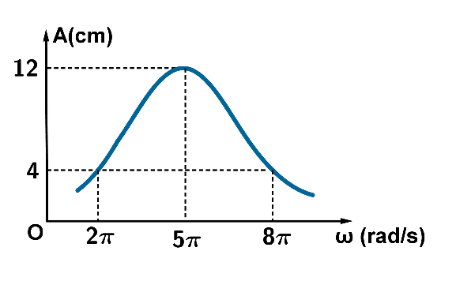

Một con lắc lò xo gồm lò xo nhẹ độ cứng 25 N/m và vật nhỏ có khối lượng $m$ dao động cưỡng bức ổn định dưới tác dụng của ngoại lực biến thiên điều hòa với tần số $f$. Đồ thị biểu diễn sự phụ thuộc của biên độ vào tần số của ngoại lực tác dụng lên hệ có dạng như hình vẽ. Lấy $\pi^{2}=10$. Khối lượng của vật nhỏ bằng bao nhiêu gam?